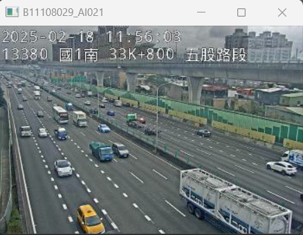

PROGRAMMING PROJECT / AI021
即時交通影像串流展示
使用 Python 與 OpenCV 串流讀取交通部高公局的監視器即時影像， 展示即時影像擷取與視訊顯示的應用。
專案資訊
功能簡介
本程式使用 OpenCV 串流讀取交通部高公局的監視器即時影像， 並即時顯示畫面。此應用常見於交通監控、災害視訊整合與 AI 視覺分析等場景。
介面截圖

程式碼片段
AI021｜即時交通影像串流
import cv2
# 串流來源可改為攝影機、影片或高公局監視器
cap = cv2.VideoCapture("https://cctvn.freeway.gov.tw/abs2mjpg/bmjpg?camera=13380")
if not cap.isOpened():
print("⚠️ 串流來源無法開啟，請檢查網路或 URL")
exit()
while True:
success, frame = cap.read()
if not success:
print("⚠️ 無法取得影像畫面")
break
cv2.imshow("AI021 - 即時交通影像", frame)
if cv2.waitKey(1) & 0xFF == 27: # 按下 ESC 鍵離開
break
cap.release()
cv2.destroyAllWindows()